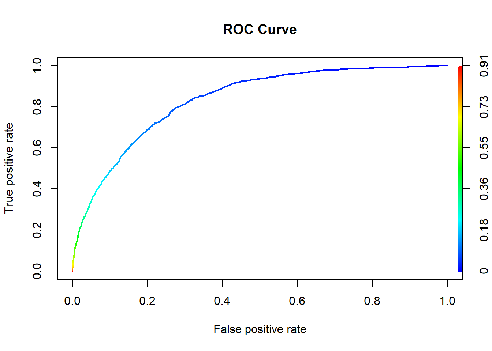

We constructed a model with all the variables in the data to try to predict heart disease. We also created models with data only from certain levels. These levels were: Males removed, Females removed, Smokers removed, Non-smokers removed, people who had strokes removed and people who didn’t have strokes removed. We chose the variables of Sex, Smoking, and Strokes because we were curious whether the levels of these specific variables had any impact on predicting Heart Disease. First, we want to see which variables of each of these models were significant in prediciting heart disease and the overall effectiveness of the model.
##
## Call:
## glm(formula = HeartDisease ~ . - 1, family = "binomial", data = heart.training)
##
## Deviance Residuals:
## Min 1Q Median 3Q Max
## -2.1296 -0.4104 -0.2438 -0.1296 3.6102
##
## Coefficients:
## Estimate Std. Error z value Pr(>|z|)
## BMI 0.0087107 0.0011734 7.424 1.14e-13 ***
## SmokingNo -6.3164258 0.1179604 -53.547 < 2e-16 ***
## SmokingYes -5.9614291 0.1182827 -50.400 < 2e-16 ***
## AlcoholDrinkingYes -0.2416636 0.0343977 -7.026 2.13e-12 ***
## StrokeYes 1.0460316 0.0232356 45.018 < 2e-16 ***
## PhysicalHealth 0.0031836 0.0008856 3.595 0.000325 ***
## MentalHealth 0.0052643 0.0009043 5.822 5.83e-09 ***
## DiffWalkingYes 0.2152965 0.0186268 11.558 < 2e-16 ***
## SexMale 0.7116305 0.0149515 47.596 < 2e-16 ***
## AgeCategory25-29 0.1323302 0.1273875 1.039 0.298898
## AgeCategory30-34 0.5073142 0.1137261 4.461 8.16e-06 ***
## AgeCategory35-39 0.6069604 0.1091358 5.562 2.67e-08 ***
## AgeCategory40-44 1.0014688 0.1027935 9.743 < 2e-16 ***
## AgeCategory45-49 1.3208789 0.0991867 13.317 < 2e-16 ***
## AgeCategory50-54 1.7281758 0.0957675 18.046 < 2e-16 ***
## AgeCategory55-59 1.9618946 0.0942643 20.813 < 2e-16 ***
## AgeCategory60-64 2.2334367 0.0933858 23.916 < 2e-16 ***
## AgeCategory65-69 2.4735458 0.0931160 26.564 < 2e-16 ***
## AgeCategory70-74 2.7608437 0.0930420 29.673 < 2e-16 ***
## AgeCategory75-79 2.9587155 0.0936036 31.609 < 2e-16 ***
## AgeCategory80 or older 3.2196270 0.0933374 34.494 < 2e-16 ***
## RaceAsian -0.5227345 0.0863755 -6.052 1.43e-09 ***
## RaceBlack -0.3293477 0.0594895 -5.536 3.09e-08 ***
## RaceHispanic -0.2401529 0.0605865 -3.964 7.38e-05 ***
## RaceOther -0.0505084 0.0659229 -0.766 0.443573
## RaceWhite -0.0603787 0.0532060 -1.135 0.256456
## DiabeticNo, borderline diabetes 0.1285947 0.0429424 2.995 0.002748 **
## DiabeticYes 0.4800229 0.0171544 27.982 < 2e-16 ***
## DiabeticYes (during pregnancy) 0.1617122 0.1063732 1.520 0.128452
## PhysicalActivityYes 0.0259486 0.0164948 1.573 0.115688
## GenHealthFair 1.5156029 0.0337591 44.895 < 2e-16 ***
## GenHealthGood 1.0458219 0.0303882 34.415 < 2e-16 ***
## GenHealthPoor 1.9028598 0.0420273 45.277 < 2e-16 ***
## GenHealthVery good 0.4697080 0.0311902 15.059 < 2e-16 ***
## SleepTime -0.0269522 0.0044555 -6.049 1.46e-09 ***
## AsthmaYes 0.2783053 0.0196986 14.128 < 2e-16 ***
## KidneyDiseaseYes 0.5706389 0.0249972 22.828 < 2e-16 ***
## SkinCancerYes 0.1153337 0.0200084 5.764 8.20e-09 ***
## ---
## Signif. codes: 0 '***' 0.001 '**' 0.01 '*' 0.05 '.' 0.1 ' ' 1
##
## (Dispersion parameter for binomial family taken to be 1)
##
## Null deviance: 421165 on 303806 degrees of freedom
## Residual deviance: 137834 on 303768 degrees of freedom
## AIC: 137910
##
## Number of Fisher Scoring iterations: 7## [1] 137910## [1] 138313.7## $Confusion_Matrix
## Predicted
## True No Yes
## No 14504 116
## Yes 1201 168
##
## $Misclassification_Rate
## [1] 0.08236913The variables that are not statistically significant are AgeCategory 25-29, RaceOther, and RaceWhite of the significance level is at 0.1. The variable that is not statistically significant if the significance level is 0.05 DiabeticYes (during pregnancy). The variable that isn’t statistically significant if the significance level is 0.001 is RaceHispanic. The misclassification rate is 0.08330727 which means that the model is fairly accurate. BMI, Smoking, and SleepTime are the variables with the highest multicollinearity, but they are still lower than 5 or 10 meaning no action to amend the collinearity is necessary.
##
## Call:
## glm(formula = HeartDisease ~ . - 1, family = "binomial", data = no.male.training.df)
##
## Deviance Residuals:
## Min 1Q Median 3Q Max
## -2.0086 -0.4243 -0.2527 -0.1312 3.5658
##
## Coefficients:
## Estimate Std. Error z value Pr(>|z|)
## BMI 0.0095772 0.0015174 6.312 2.76e-10 ***
## SmokingNo -5.9258926 0.1540762 -38.461 < 2e-16 ***
## SmokingYes -5.5006480 0.1542697 -35.656 < 2e-16 ***
## AlcoholDrinkingYes -0.2256817 0.0451344 -5.000 5.73e-07 ***
## StrokeYes 1.0613471 0.0301893 35.156 < 2e-16 ***
## PhysicalHealth 0.0035120 0.0011551 3.040 0.00236 **
## MentalHealth 0.0005091 0.0011791 0.432 0.66592
## DiffWalkingYes 0.1441062 0.0242098 5.952 2.64e-09 ***
## AgeCategory25-29 0.0324590 0.1707256 0.190 0.84921
## AgeCategory30-34 0.3327496 0.1534588 2.168 0.03013 *
## AgeCategory35-39 0.5896015 0.1428801 4.127 3.68e-05 ***
## AgeCategory40-44 0.9086270 0.1354965 6.706 2.00e-11 ***
## AgeCategory45-49 1.2570438 0.1304004 9.640 < 2e-16 ***
## AgeCategory50-54 1.7101636 0.1256080 13.615 < 2e-16 ***
## AgeCategory55-59 1.9267605 0.1237634 15.568 < 2e-16 ***
## AgeCategory60-64 2.1915371 0.1226867 17.863 < 2e-16 ***
## AgeCategory65-69 2.3898381 0.1223724 19.529 < 2e-16 ***
## AgeCategory70-74 2.6413383 0.1222838 21.600 < 2e-16 ***
## AgeCategory75-79 2.8442929 0.1229315 23.137 < 2e-16 ***
## AgeCategory80 or older 3.0788855 0.1226077 25.112 < 2e-16 ***
## RaceAsian -0.5393059 0.1130561 -4.770 1.84e-06 ***
## RaceBlack -0.3515113 0.0774090 -4.541 5.60e-06 ***
## RaceHispanic -0.2042893 0.0771868 -2.647 0.00813 **
## RaceOther -0.0002706 0.0843385 -0.003 0.99744
## RaceWhite -0.0749135 0.0689262 -1.087 0.27710
## DiabeticNo, borderline diabetes 0.1796249 0.0557979 3.219 0.00129 **
## DiabeticYes 0.4862336 0.0224098 21.697 < 2e-16 ***
## DiabeticYes (during pregnancy) -0.2728868 0.1411253 -1.934 0.05316 .
## PhysicalActivityYes 0.0643172 0.0214530 2.998 0.00272 **
## GenHealthFair 1.5120092 0.0441770 34.226 < 2e-16 ***
## GenHealthGood 1.0390469 0.0398378 26.082 < 2e-16 ***
## GenHealthPoor 1.9323672 0.0549854 35.143 < 2e-16 ***
## GenHealthVery good 0.4982773 0.0407337 12.233 < 2e-16 ***
## SleepTime -0.0245650 0.0057664 -4.260 2.04e-05 ***
## AsthmaYes 0.2185872 0.0254195 8.599 < 2e-16 ***
## KidneyDiseaseYes 0.5512027 0.0327311 16.840 < 2e-16 ***
## SkinCancerYes 0.1972819 0.0259105 7.614 2.66e-14 ***
## ---
## Signif. codes: 0 '***' 0.001 '**' 0.01 '*' 0.05 '.' 0.1 ' ' 1
##
## (Dispersion parameter for binomial family taken to be 1)
##
## Null deviance: 243296 on 175501 degrees of freedom
## Residual deviance: 81230 on 175464 degrees of freedom
## AIC: 81304
##
## Number of Fisher Scoring iterations: 7## [1] 81304.28## [1] 81677.07## $Confusion_Matrix
## Predicted
## True No Yes
## No 283448 1995
## Yes 24333 2323
##
## $Misclassification_Rate
## [1] 0.08435785The variables that are not statistically significant are AgeCategory25-29, RaceOther, RaceWhite, and DiabeticYes (during pregnancy). Sleep time and Race Hispanic are statistically significant only if the significance level is 0.01. Ages 35-39 is statistically significant only if the significance level is 0.001.The misclassification rate is 0.08456932 which means that the model is fairly accurate. BMI, Smoking, and SleepTime are the variables with the highest multicollinearity, but they are still lower than 5 or 10 meaning no action to amend the collinearity is necessary.
##
## Call:
## glm(formula = HeartDisease ~ . - 1, family = "binomial", data = no.female.training.df)
##
## Deviance Residuals:
## Min 1Q Median 3Q Max
## -2.1104 -0.4177 -0.2516 -0.1369 3.4351
##
## Coefficients:
## Estimate Std. Error z value Pr(>|z|)
## BMI 0.010151 0.001577 6.438 1.21e-10 ***
## SmokingNo -5.821217 0.157995 -36.844 < 2e-16 ***
## SmokingYes -5.365339 0.158259 -33.902 < 2e-16 ***
## AlcoholDrinkingYes -0.229248 0.046857 -4.892 9.96e-07 ***
## StrokeYes 1.044547 0.031910 32.734 < 2e-16 ***
## PhysicalHealth 0.003281 0.001204 2.725 0.006423 **
## MentalHealth 0.001716 0.001231 1.394 0.163320
## DiffWalkingYes 0.150110 0.025346 5.923 3.17e-09 ***
## AgeCategory25-29 0.177517 0.165338 1.074 0.282975
## AgeCategory30-34 0.451178 0.150273 3.002 0.002679 **
## AgeCategory35-39 0.406559 0.146963 2.766 0.005668 **
## AgeCategory40-44 0.875988 0.136404 6.422 1.34e-10 ***
## AgeCategory45-49 1.154505 0.131791 8.760 < 2e-16 ***
## AgeCategory50-54 1.500132 0.127599 11.757 < 2e-16 ***
## AgeCategory55-59 1.778123 0.125223 14.200 < 2e-16 ***
## AgeCategory60-64 2.004878 0.124037 16.164 < 2e-16 ***
## AgeCategory65-69 2.255533 0.123569 18.253 < 2e-16 ***
## AgeCategory70-74 2.532292 0.123437 20.515 < 2e-16 ***
## AgeCategory75-79 2.703001 0.124233 21.758 < 2e-16 ***
## AgeCategory80 or older 2.950068 0.123805 23.828 < 2e-16 ***
## RaceAsian -0.432659 0.114294 -3.785 0.000153 ***
## RaceBlack -0.390811 0.082227 -4.753 2.01e-06 ***
## RaceHispanic -0.213448 0.081571 -2.617 0.008878 **
## RaceOther -0.046602 0.089780 -0.519 0.603718
## RaceWhite -0.047956 0.073200 -0.655 0.512381
## DiabeticNo, borderline diabetes 0.130859 0.058137 2.251 0.024393 *
## DiabeticYes 0.537707 0.023414 22.965 < 2e-16 ***
## DiabeticYes (during pregnancy) -0.183824 0.147827 -1.244 0.213681
## PhysicalActivityYes 0.053878 0.022492 2.395 0.016602 *
## GenHealthFair 1.483563 0.045975 32.269 < 2e-16 ***
## GenHealthGood 1.022115 0.041417 24.679 < 2e-16 ***
## GenHealthPoor 1.868987 0.057358 32.584 < 2e-16 ***
## GenHealthVery good 0.387143 0.042714 9.064 < 2e-16 ***
## SleepTime -0.021859 0.006137 -3.562 0.000368 ***
## AsthmaYes 0.178191 0.026936 6.615 3.71e-11 ***
## KidneyDiseaseYes 0.573376 0.034099 16.815 < 2e-16 ***
## SkinCancerYes 0.142452 0.027651 5.152 2.58e-07 ***
## ---
## Signif. codes: 0 '***' 0.001 '**' 0.01 '*' 0.05 '.' 0.1 ' ' 1
##
## (Dispersion parameter for binomial family taken to be 1)
##
## Null deviance: 222199 on 160283 degrees of freedom
## Residual deviance: 73888 on 160246 degrees of freedom
## AIC: 73962
##
## Number of Fisher Scoring iterations: 7## [1] 73961.81## [1] 74331.24## $Confusion_Matrix
## Predicted
## True No Yes
## No 282869 2049
## Yes 24185 2399
##
## $Misclassification_Rate
## [1] 0.08421776The variables that are not statistically significant are RaceHispanic, Race Other, and Diabetic Yes (during pregnancy). Sleep time is statistically significant only if the significance level is 0.001.AgeCategory 25-29 and RaceBlack are statistically significant only if the level of significance is 0.05. RaceWhite and BMI are statistically significant only if the significance level is 0.01. Sleept time and Ages30-34 are statistically signifcant only if the level of significance is 0.001. The misclassification rate is 0.08456932 which means that the model is fairly accurate. BMI, Smoking, and SleepTime are the variables with the highest multicollinearity, but they are still lower than 5 or 10 meaning no action to amend the collinearity is necessary.
##
## Call:
## glm(formula = HeartDisease ~ . - 1, family = "binomial", data = smoker.training.df)
##
## Deviance Residuals:
## Min 1Q Median 3Q Max
## -2.0724 -0.4103 -0.2461 -0.1307 3.6197
##
## Coefficients:
## Estimate Std. Error z value Pr(>|z|)
## BMI 0.007722 0.001475 5.237 1.63e-07 ***
## AlcoholDrinkingNo -6.243988 0.150890 -41.381 < 2e-16 ***
## AlcoholDrinkingYes -6.492307 0.156421 -41.505 < 2e-16 ***
## StrokeYes 1.008465 0.029354 34.356 < 2e-16 ***
## PhysicalHealth 0.003262 0.001110 2.940 0.003285 **
## MentalHealth 0.004724 0.001138 4.150 3.33e-05 ***
## DiffWalkingYes 0.245989 0.023333 10.543 < 2e-16 ***
## SexMale 0.753068 0.018616 40.454 < 2e-16 ***
## AgeCategory25-29 0.316933 0.161566 1.962 0.049805 *
## AgeCategory30-34 0.691022 0.145943 4.735 2.19e-06 ***
## AgeCategory35-39 0.809361 0.140462 5.762 8.31e-09 ***
## AgeCategory40-44 1.188505 0.132932 8.941 < 2e-16 ***
## AgeCategory45-49 1.476592 0.128729 11.471 < 2e-16 ***
## AgeCategory50-54 1.913447 0.124326 15.391 < 2e-16 ***
## AgeCategory55-59 2.128940 0.122604 17.364 < 2e-16 ***
## AgeCategory60-64 2.398855 0.121517 19.741 < 2e-16 ***
## AgeCategory65-69 2.665287 0.121159 21.998 < 2e-16 ***
## AgeCategory70-74 2.959222 0.121071 24.442 < 2e-16 ***
## AgeCategory75-79 3.167628 0.121717 26.025 < 2e-16 ***
## AgeCategory80 or older 3.381578 0.121497 27.833 < 2e-16 ***
## RaceAsian -0.770438 0.109519 -7.035 2.00e-12 ***
## RaceBlack -0.419372 0.073708 -5.690 1.27e-08 ***
## RaceHispanic -0.287451 0.073648 -3.903 9.50e-05 ***
## RaceOther -0.087645 0.080902 -1.083 0.278657
## RaceWhite -0.108542 0.065426 -1.659 0.097114 .
## DiabeticNo, borderline diabetes 0.128937 0.053727 2.400 0.016401 *
## DiabeticYes 0.489640 0.021468 22.808 < 2e-16 ***
## DiabeticYes (during pregnancy) 0.130808 0.133522 0.980 0.327248
## PhysicalActivityYes 0.005360 0.020617 0.260 0.794877
## GenHealthFair 1.533958 0.041797 36.701 < 2e-16 ***
## GenHealthGood 1.032746 0.037634 27.442 < 2e-16 ***
## GenHealthPoor 1.941926 0.052162 37.229 < 2e-16 ***
## GenHealthVery good 0.467999 0.038610 12.121 < 2e-16 ***
## SleepTime -0.027684 0.005604 -4.941 7.79e-07 ***
## AsthmaYes 0.269109 0.024672 10.908 < 2e-16 ***
## KidneyDiseaseYes 0.532130 0.031456 16.917 < 2e-16 ***
## SkinCancerYes 0.091034 0.025214 3.610 0.000306 ***
## ---
## Signif. codes: 0 '***' 0.001 '**' 0.01 '*' 0.05 '.' 0.1 ' ' 1
##
## (Dispersion parameter for binomial family taken to be 1)
##
## Null deviance: 269561 on 194447 degrees of freedom
## Residual deviance: 88090 on 194410 degrees of freedom
## AIC: 88164
##
## Number of Fisher Scoring iterations: 7## [1] 88163.53## [1] 88540.11## $Confusion_Matrix
## Predicted
## True No Yes
## No 284239 2264
## Yes 24126 2606
##
## $Misclassification_Rate
## [1] 0.08424984The variables that are not statistically significant are BMI, AgeCategory 25-29, RaceOther, RaceWhite, and Diabetic Yes(during pregnancy) is the level of significance is 0.1. Sleeptime is only statistically significant if the level of significance is 0.05. AgeCategory30-34 and RaceHispanic is statistically significant only if the significance level is 0.001.The misclassification rate is 0.08473544 which means that the model is fairly accurate. BMI, Smoking, and SleepTime are the variables with the highest multicollinearity, but they are still lower than 5 or 10 meaning no action to amend the collinearity is necessary.
##
## Call:
## glm(formula = HeartDisease ~ . - 1, family = "binomial", data = non.smoker.training.df)
##
## Deviance Residuals:
## Min 1Q Median 3Q Max
## -2.0848 -0.4155 -0.2501 -0.1335 3.5609
##
## Coefficients:
## Estimate Std. Error z value Pr(>|z|)
## BMI 0.005840 0.001707 3.421 0.000624 ***
## AlcoholDrinkingNo -6.020951 0.164565 -36.587 < 2e-16 ***
## AlcoholDrinkingYes -6.099750 0.170405 -35.796 < 2e-16 ***
## StrokeYes 1.129801 0.033709 33.517 < 2e-16 ***
## PhysicalHealth 0.003635 0.001286 2.826 0.004710 **
## MentalHealth 0.007882 0.001309 6.022 1.72e-09 ***
## DiffWalkingYes 0.207701 0.027139 7.653 1.96e-14 ***
## SexMale 0.735417 0.021612 34.028 < 2e-16 ***
## AgeCategory25-29 0.078542 0.175598 0.447 0.654670
## AgeCategory30-34 0.371511 0.159355 2.331 0.019735 *
## AgeCategory35-39 0.542970 0.150079 3.618 0.000297 ***
## AgeCategory40-44 0.976806 0.139361 7.009 2.40e-12 ***
## AgeCategory45-49 1.324018 0.133587 9.911 < 2e-16 ***
## AgeCategory50-54 1.649775 0.129139 12.775 < 2e-16 ***
## AgeCategory55-59 1.961462 0.126476 15.509 < 2e-16 ***
## AgeCategory60-64 2.198359 0.125312 17.543 < 2e-16 ***
## AgeCategory65-69 2.385030 0.124967 19.085 < 2e-16 ***
## AgeCategory70-74 2.673027 0.124868 21.407 < 2e-16 ***
## AgeCategory75-79 2.889988 0.125751 22.982 < 2e-16 ***
## AgeCategory80 or older 3.146218 0.125410 25.088 < 2e-16 ***
## RaceAsian -0.461966 0.120216 -3.843 0.000122 ***
## RaceBlack -0.375809 0.088675 -4.238 2.25e-05 ***
## RaceHispanic -0.334831 0.087703 -3.818 0.000135 ***
## RaceOther -0.073068 0.096234 -0.759 0.447690
## RaceWhite -0.129434 0.079500 -1.628 0.103503
## DiabeticNo, borderline diabetes 0.139585 0.061767 2.260 0.023831 *
## DiabeticYes 0.447312 0.024993 17.898 < 2e-16 ***
## DiabeticYes (during pregnancy) 0.110679 0.159959 0.692 0.488987
## PhysicalActivityYes -0.007048 0.023959 -0.294 0.768628
## GenHealthFair 1.591293 0.049279 32.292 < 2e-16 ***
## GenHealthGood 1.133708 0.044450 25.505 < 2e-16 ***
## GenHealthPoor 1.944277 0.061693 31.515 < 2e-16 ***
## GenHealthVery good 0.509739 0.045802 11.129 < 2e-16 ***
## SleepTime -0.022725 0.006469 -3.513 0.000443 ***
## AsthmaYes 0.330183 0.028553 11.564 < 2e-16 ***
## KidneyDiseaseYes 0.598215 0.036430 16.421 < 2e-16 ***
## SkinCancerYes 0.145900 0.029314 4.977 6.45e-07 ***
## ---
## Signif. codes: 0 '***' 0.001 '**' 0.01 '*' 0.05 '.' 0.1 ' ' 1
##
## (Dispersion parameter for binomial family taken to be 1)
##
## Null deviance: 195935 on 141337 degrees of freedom
## Residual deviance: 65148 on 141300 degrees of freedom
## AIC: 65222
##
## Number of Fisher Scoring iterations: 7## [1] 65222.29## [1] 65587.07## $Confusion_Matrix
## Predicted
## True No Yes
## No 281389 2469
## Yes 23717 2791
##
## $Misclassification_Rate
## [1] 0.08437136The variables that are not statistically significant are AgeCategory 25-29, RaceOther, RaceWhite, and DiabeticYes (during pregnancy) if the level of significance is 0.1. MentalHealth and RaceHispanic are statistically significant if the level of significance is 0.01. The misclassification rate is 0.08475112 which means that the model is fairly accurate. BMI, Smoking, and SleepTime are the variables with the highest multicollinearity, but they are still lower than 5 or 10 meaning no action to amend the collinearity is necessary.
##
## Call:
## glm(formula = HeartDisease ~ . - 1, family = "binomial", data = stroke.training.df)
##
## Deviance Residuals:
## Min 1Q Median 3Q Max
## -2.0324 -0.4192 -0.2474 -0.1293 3.6203
##
## Coefficients:
## Estimate Std. Error z value Pr(>|z|)
## BMI 0.0066448 0.0011554 5.751 8.86e-09 ***
## SmokingNo -6.2593103 0.1159414 -53.987 < 2e-16 ***
## SmokingYes -5.8932505 0.1162586 -50.691 < 2e-16 ***
## AlcoholDrinkingYes -0.2586744 0.0340796 -7.590 3.19e-14 ***
## PhysicalHealth 0.0033537 0.0008701 3.854 0.000116 ***
## MentalHealth 0.0055252 0.0008884 6.219 4.99e-10 ***
## DiffWalkingYes 0.2600678 0.0182668 14.237 < 2e-16 ***
## SexMale 0.7030698 0.0147060 47.808 < 2e-16 ***
## AgeCategory25-29 0.1118252 0.1263448 0.885 0.376113
## AgeCategory30-34 0.4822023 0.1126557 4.280 1.87e-05 ***
## AgeCategory35-39 0.6040905 0.1077209 5.608 2.05e-08 ***
## AgeCategory40-44 0.9937899 0.1015248 9.789 < 2e-16 ***
## AgeCategory45-49 1.3511416 0.0975780 13.847 < 2e-16 ***
## AgeCategory50-54 1.7489173 0.0942838 18.549 < 2e-16 ***
## AgeCategory55-59 2.0034021 0.0927523 21.599 < 2e-16 ***
## AgeCategory60-64 2.2743493 0.0918924 24.750 < 2e-16 ***
## AgeCategory65-69 2.5175898 0.0916243 27.477 < 2e-16 ***
## AgeCategory70-74 2.8021001 0.0915676 30.601 < 2e-16 ***
## AgeCategory75-79 3.0244243 0.0920907 32.842 < 2e-16 ***
## AgeCategory80 or older 3.2895920 0.0918328 35.822 < 2e-16 ***
## RaceAsian -0.5406341 0.0844968 -6.398 1.57e-10 ***
## RaceBlack -0.3198662 0.0579895 -5.516 3.47e-08 ***
## RaceHispanic -0.3050887 0.0591768 -5.156 2.53e-07 ***
## RaceOther -0.0574778 0.0643221 -0.894 0.371540
## RaceWhite -0.1006844 0.0518423 -1.942 0.052121 .
## DiabeticNo, borderline diabetes 0.1311246 0.0421887 3.108 0.001883 **
## DiabeticYes 0.4964986 0.0168572 29.453 < 2e-16 ***
## DiabeticYes (during pregnancy) 0.1164586 0.1065155 1.093 0.274241
## PhysicalActivityYes 0.0167308 0.0162244 1.031 0.302443
## GenHealthFair 1.5826630 0.0332854 47.548 < 2e-16 ***
## GenHealthGood 1.0750961 0.0300443 35.784 < 2e-16 ***
## GenHealthPoor 2.0001224 0.0413093 48.418 < 2e-16 ***
## GenHealthVery good 0.4799644 0.0308549 15.556 < 2e-16 ***
## SleepTime -0.0220530 0.0043829 -5.032 4.86e-07 ***
## AsthmaYes 0.2927014 0.0193913 15.094 < 2e-16 ***
## KidneyDiseaseYes 0.5972722 0.0245560 24.323 < 2e-16 ***
## SkinCancerYes 0.1228170 0.0196823 6.240 4.38e-10 ***
## ---
## Signif. codes: 0 '***' 0.001 '**' 0.01 '*' 0.05 '.' 0.1 ' ' 1
##
## (Dispersion parameter for binomial family taken to be 1)
##
## Null deviance: 427433 on 308328 degrees of freedom
## Residual deviance: 141859 on 308291 degrees of freedom
## AIC: 141933
##
## Number of Fisher Scoring iterations: 7## [1] 141933.1## [1] 142326.7## $Confusion_Matrix
## Predicted
## True No Yes
## No 289889 1990
## Yes 25100 2214
##
## $Misclassification_Rate
## [1] 0.08487028The variables that are not statistically significant are AgeCategory 25-29 and Hispanic if the level of significance is 0.1. BMI and RaceWhite are only statistically significant if the level of significance is 0.05. Sleeptime is only statistically significant if the level of significance 0.001. The misclassification rate is 0.08525729 which means that the model is fairly accurate. BMI, Smoking, and SleepTime are the variables with the highest multicollinearity, but they are still lower than 5 or 10 meaning no action to amend the collinearity is necessary.
##
## Call:
## glm(formula = HeartDisease ~ . - 1, family = "binomial", data = non.stroke.training.df)
##
## Deviance Residuals:
## Min 1Q Median 3Q Max
## -1.8282 -0.4189 -0.2601 -0.1471 3.3873
##
## Coefficients:
## Estimate Std. Error z value Pr(>|z|)
## BMI 0.008802 0.003886 2.265 0.023520 *
## SmokingNo -5.682039 0.369638 -15.372 < 2e-16 ***
## SmokingYes -5.361078 0.370440 -14.472 < 2e-16 ***
## AlcoholDrinkingYes -0.211469 0.110846 -1.908 0.056420 .
## PhysicalHealth 0.007779 0.002801 2.777 0.005490 **
## MentalHealth 0.011021 0.002874 3.834 0.000126 ***
## DiffWalkingYes 0.331769 0.060431 5.490 4.02e-08 ***
## SexMale 0.684645 0.049176 13.922 < 2e-16 ***
## AgeCategory25-29 0.460401 0.352096 1.308 0.191009
## AgeCategory30-34 0.264578 0.355831 0.744 0.457148
## AgeCategory35-39 0.535549 0.331594 1.615 0.106294
## AgeCategory40-44 1.045350 0.300854 3.475 0.000512 ***
## AgeCategory45-49 1.195886 0.297302 4.022 5.76e-05 ***
## AgeCategory50-54 1.591871 0.285951 5.567 2.59e-08 ***
## AgeCategory55-59 1.940306 0.280267 6.923 4.42e-12 ***
## AgeCategory60-64 1.988959 0.279062 7.127 1.02e-12 ***
## AgeCategory65-69 2.206942 0.278164 7.934 2.12e-15 ***
## AgeCategory70-74 2.557286 0.277947 9.201 < 2e-16 ***
## AgeCategory75-79 2.818396 0.279986 10.066 < 2e-16 ***
## AgeCategory80 or older 3.090290 0.279417 11.060 < 2e-16 ***
## RaceAsian -0.917713 0.256383 -3.579 0.000344 ***
## RaceBlack -0.744545 0.220591 -3.375 0.000738 ***
## RaceHispanic -0.440081 0.187404 -2.348 0.018859 *
## RaceOther -0.306122 0.204333 -1.498 0.134093
## RaceWhite -0.431759 0.180922 -2.386 0.017012 *
## DiabeticNo, borderline diabetes 0.186780 0.138178 1.352 0.176459
## DiabeticYes 0.492405 0.056134 8.772 < 2e-16 ***
## DiabeticYes (during pregnancy) 0.204770 0.345434 0.593 0.553322
## PhysicalActivityYes 0.011286 0.053209 0.212 0.832020
## GenHealthFair 1.282710 0.107499 11.932 < 2e-16 ***
## GenHealthGood 0.900242 0.097191 9.263 < 2e-16 ***
## GenHealthPoor 1.684437 0.136487 12.341 < 2e-16 ***
## GenHealthVery good 0.406583 0.100666 4.039 5.37e-05 ***
## SleepTime -0.023274 0.014698 -1.584 0.113304
## AsthmaYes 0.402596 0.062596 6.432 1.26e-10 ***
## KidneyDiseaseYes 0.614180 0.082150 7.476 7.64e-14 ***
## SkinCancerYes 0.124603 0.071109 1.752 0.079727 .
## ---
## Signif. codes: 0 '***' 0.001 '**' 0.01 '*' 0.05 '.' 0.1 ' ' 1
##
## (Dispersion parameter for binomial family taken to be 1)
##
## Null deviance: 38062 on 27456 degrees of freedom
## Residual deviance: 12840 on 27419 degrees of freedom
## AIC: 12914
##
## Number of Fisher Scoring iterations: 7## [1] 12914.23## [1] 13218.39## $Confusion_Matrix
## Predicted
## True No Yes
## No 276769 1713
## Yes 24003 1923
##
## $Misclassification_Rate
## [1] 0.08447873The variables that are not statistically significant are BMI, AgeCategory 25-29, AgeCategory 30-34, AgeCategory 35-39, RaceOther and sleeptime if the level of significance is 0.1. Hispanic, RaceWhite, DiabeticYes (during pregnancy), PhysicallyActiveYes are statistically significant if the level of significance is 0.01. AlcoholDrinkingYes and RaceBlack are not statistically significant if the level of significance is 0.001. The misclassification rate is 0.08538408 which means that the model is fairly accurate. BMI, Smoking, and SleepTime are the variables with the highest multicollinearity, but they are still lower than 5 or 10 meaning no action to amend the collinearity is necessary.
All models were effective at predicting Heart Disease with different variables being statistically significant at different levels.
But which models where the best at predicting Heart Disease? And how did the statistical significance of variables change between the models? How do naturally paired models compare to each other.
The misclassification error rates only had slight differences between the all the models and all were similarly effective at prediction. Also when comparing AIC, the order of largest to smallest AIC’s are log.reg.stroke, log.reg.full, log.reg.non.stroke, log.reg.smoker,log.reg.no.female,log.reg.no.male, and log.reg.non.smoker. This means that the model where the non smokers were removed from the data set had the best fit model by AIC. This doesn’t mean that we recommend the data set remove all non-smokers from their data sets, but rather that a model with all smokers have the most explanatory power when trying to model predictor variables and heart disease. It seems that whether people are smoking or not effects the model greatly according to AIC. The full model has one of the highest AIC’s compared to the other models which might indicate that the model predictor variables might be confounding variables. As when only giving data from a certain level improves the predictive power of the model. But, in the Full model, there are less variables that are statistically insignificant.
When comparing the different variables’s statistical significance when predicting Heart Disease many of the variables have had a lot of consistency. Most variables remain statistically significant abnd do not deviate between the models. Certain notable changes are as follows. Ages25-29, RaceOther, RaceWhite,DiabeticYes (while pregnant) and BMI consistently have really low statistical significance across all models. RaceHispanic, Sleeptime ,Ages 30-34 ,and Ages 35-39 intermittenly lose very high statistical significance. MentalHealth only loses statistical significance in the non-smoker only model. Alcohol drinking loses statistical significance in the non-stroke model only. PhysicalActiveYes loses statistical significance in the non-stroke only model. BMI, Smoking, and SleepTime are the variables with the highest multicollinearity, but they are still lower than 5 or 10 across all models.
Males and Female models had similar AIC’s and had the mostly the same variables that where less statistically significant and of the same level of significance. They had a similar misclassifcation error rate as well. The models of the two sexes do not vary much from each other meaning their predictive power when looking at development of heart disease is roughly equal.
Smoker and non-smoker models had the mostly the same variables that where less statistically significant and of the same level of significance. They had a similar misclassifcation error rate as well. The AIC of model with smokers has a much smaller AIC than the model with non-smokers. This means that the data at smokers are a better fit at predicting Heart Disease than the data of non-smokers. So, whether someone smokes or doesn’t, has an effect on the predictive power of the model and may be a confounding variable. This paired with multicollineratiy of smoking/nonsmoking variable may indicate multicollinearity.
Stroke and non-stroke models had very close AIC’s. They had a similar misclassifcation error rate. The Stroke only model had much fewer statistically insignificant variables than the non-stroke only model. This means that more predictor variables under non-stroke only model are much less predictive of Heart Disease. This might indicate that people who did not have strokes are at less risk of Heart Disease as they have less factors that predict heart disease.
 There are some threshold cut off points graphed above. By eyeballing the graph, we can see that the threshold is somewhere in the dark blue region since that is closest to 1 on for the true positive rate. The threshold will be somewhere around 0.1 (based on the one of the cut off points and color key).
## Area under the curve: 0.834## threshold specificity sensitivity
## 1 0.08387448 0.7292066 0.7910884The AUC is 0.834 which is quite good since it’s closer to 1 than 0.5. The calculated threshold is 0.083 which aligns with the ROC curve from above.
It is possible to build a predictive model of Heart Disease. We notice that when changing the data to control for different variables, we have a significant impact on certain variables compared to the full model. Most of the controlled data models had lower AICS than the full models. And these models also had more statistically insignificant variables. This means that among these given variables, variables were less predictive of Heart Disease. The variables that seem to have the greatest changes between models are RaceHispanic, Sleeptime ,Ages 30-34 ,and Ages 35-39. And other variables seem to have no impact across all models such as Ages 25-29 and Diabetic while pregnant. RaceOther and RaceWhite are all statistically insignificant in all models except the full models. This might mean that these variables have different effects in HeartDisease given other factors and may not be as strong predictors of Heart Disease as we believed.